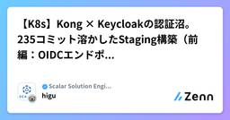

Scalar Solution Engineer Blogのフィード
https://zenn.dev/p/scalar_sol_blog
Scalar製品を活用するための情報をまとめていきます。 インフラの仕組み作り、AI駆動開発のテクニック、Scalar製品の活用方法、AI Agent の使い方など、Scalarの製品に限らず、幅広く取り扱っています。
フィード

Terraform / Kubernetes の構築で、初心者がよく指摘されるポイントのまとめ
Scalar Solution Engineer Blogのフィード
弊社では、AWS、Azure、GCP に対応した kubernetes ベースの Scalar製品を展開するインフラのテンプレートを開発しています。この開発をエンジニア歴の浅い二人にお願いしており、二人からあがってくるマージリクエスト（MR）のレビューを重ねると、指摘の多くは毎回異なる「新しい問題」ではなく、同じパターンの再発であることが分かってきます。そこで、繰り返し指摘している事項をまとめました。 対象読者Terraform / Kubernetes を使ったインフラ構築を始めたばかりのエンジニアIaC の MR がなかなかレビューを通らず、指摘の傾向を知りたい方AI ...
14時間前

「名前が価値を語る」プロダクト命名をAIにやらせる — nexus-architect の命名スキル実践
Scalar Solution Engineer Blogのフィード
プロダクトやツールに名前を付けるとき、「かっこいいけど意味が薄い」「意味は正しいけど覚えにくい」の間で延々と悩んだ経験はないでしょうか。この記事では、Claude Code のスキル /product:name-product（nexus-architect の product プラグイン）を使い、頭字語（アクロニム）型の命名 — 名前の各文字が英単語の頭文字になっていて、名前そのものが製品価値を表すフレーズになる — をAIエージェントに支援させる流れを、実際の題材で最後まで通してみます。題材は「Engineering BOM に対して代替部品候補を提示する AIエージェント連携サ...
14時間前

【K8s】Kong × Keycloakの認証沼。235コミット溶かしたStaging構築（前編：OIDCエンドポイントとヘアピンの罠）
Scalar Solution Engineer Blogのフィード
概要以前、Test 環境で Kong × Keycloak の OIDC 認証を構築した記事を書きました。前回はこちら 👇https://zenn.dev/scalar_sol_blog/articles/dafd1f9b828515「Staging でも同じようにやるだけでしょ」と思っていたのですが、気づいたら OIDCの設定で 235コミット になっていました。この記事では、Staging 環境で詰まった2つのポイントを書きます。① client_auth のデフォルト設定が思ってたのと違った② ログイン画面は出るのにログインできない 対象読者Kong ...
7日前

【K8s】「全部Spotでいいじゃん」とはいかなかった。EKS + KarpenterでSpotとOn-Demandを使い分けの試行錯誤
Scalar Solution Engineer Blogのフィード
はじめにStaging EKS に Karpenter を導入して、ワークロードによってノードを使い分ける構成を作りました。「Spot インスタンスを使えばコストが下がる」とは聞いていたのですが、「じゃあ全部 Spot でいいじゃん」とはならなくて……。「どのワークロードを Spot に乗せていいのか」「Spot が突然消えたときに何が起きるのか」を考えながら設計していく作業が思ったより大変でした。構築の記録と、ハマったポイントをまとめておきます。 対象読者Karpenter を初めて触る方EKS で Spot インスタンスを使ってコスト削減をしたい方「Spot ...
8日前
「nexus-architect」実行のAIトークンコストを見積もる
Scalar Solution Engineer Blogのフィード
この記事では、AIエージェントパイプラインの実行コスト(トークンコスト)を事前に見積もり、実行中に自動計測し、実測で見積もりを校正する仕組みを Claude Code プラグインに実装した方法を解説します。弊社で開発しているシステムアーキテクチャ設計エージェント「nexus-architect」を題材に、次の3点を紹介します。価格とヒューリスティクスを単一の JSON に集約する設計Claude Code の hooks でトランスクリプトからトークン使用量をフェーズ別に自動記録する実装LOC(コード行数)ベースの事前見積もりモデルと、実測による校正ループ「AIエージェント...
9日前
cert-manager設計で最初に迷ったIssuerの選択
Scalar Solution Engineer Blogのフィード
概要この記事では、cert-managerの設計を進める中で「ClusterIssuerとIssuerのどちらを選ぶべきか」で苦労した経験を書いています。上司のレビューを通じてたくさんの気づきがありました。その過程を記録しています。 対象読者cert-managerの設計でIssuerとClusterIssuerの使い分けに迷っている方Blast Radiusという概念を設計に落とし込もうとしている方Kubernetes上でゼロトラストの設計を学んでいる方 背景・目的ステージング環境をゼロトラスト化するプロジェクトで、cert-managerの設計を担当する...
9日前
CIは「作る」、ArgoCDは「維持する」GitOps導入で一番悩んだツール間の役割分担
Scalar Solution Engineer Blogのフィード
はじめにStaging 環境に ArgoCD を導入して、GitLab CI と組み合わせた CI/CD パイプラインを作りました。「ArgoCD を入れたら自動デプロイできるんでしょ？」と思っていたのですが、甘かったです……。「GitLab CI と ArgoCD の役割をどう分けるか」「どこを Terraform で管理して、どこを ArgoCD に任せるか」といった判断が思ったより難しく、設計から詰まりました。構築の記録と、ハマったポイントをまとめておきます。 対象読者ArgoCD を初めて触る方GitLab CI と組み合わせて自動デプロイの仕組みを作ろう...
10日前
north-southとeast-westの違いを理解するまで
Scalar Solution Engineer Blogのフィード
自己紹介こんにちは。SESとして株式会社Scalarに常駐しているインフラエンジニアの岩﨑です。実務経歴8ヶ月目で、最近はKubernetes上でのcert-manager設計に取り組んでいます。 概要この記事では、cert-managerの設計を進める中で「north-southとeast-westの使い分け」を理解するまでの過程を書いています。証明書設計を始めた当初、north-southとeast-westという言葉の意味から始まり、「なぜ使い分けるのか」「自分のプロジェクトではどう当てはめるのか」という疑問を順番に解消していった記録です。理解するまでに時間がかかっ...
14日前
【後編：接続編】ScalarDB Analytics で分析基盤を作ってみた話
Scalar Solution Engineer Blogのフィード
はじめに前編では Private Subnet に EMR を Terraform で建てるまでの話を書きました。今回はその EMR から ScalarDB Analytics Server に実際に繋いでデータを読んでみた話です。「前編で EMR が動いたし、あとは繋ぐだけでしょ」と思っていたのですが、色々苦戦したので記事にしました。この記事は後編です。前編（EMR 構築編）はこちら👇https://zenn.dev/scalar_sol_blog/articles/b50755c19475df ScalarDB Analytics ってそもそも何？ScalarD...
16日前
【前編：EMR 構築編】ScalarDB Analytics で分析基盤を作ってみた話
Scalar Solution Engineer Blogのフィード
はじめに「ScalarDB のデータを ScalarDB Analytics で分析・集計したい」ということで、その実行環境として Amazon EMR を構築することにしました。「Terraform でサクッと作れるでしょ」と思っていたのですが、甘かったです……。Private Subnet に置こうとしたら想定外の罠に次々とハマったので、構築の記録と詰まったポイントをまとめておきます。この記事は前編です。後編では EMR から ScalarDB Analytics に実際に繋ぐ話を書きます。 対象読者AWS EMR を初めて触る方Terraform で EMR...
18日前
KubernetesのFQDNとCoreDNSを理解するまで
Scalar Solution Engineer Blogのフィード
自己紹介こんにちは。SESとして株式会社Scalarに常駐しているインフラエンジニアの岩﨑です。実務経歴7ヶ月目で、最近はKubernetes上でのcert-manager設計に取り組んでいます。 概要この記事では、cert-managerの設計を進める中で「なぜIPではなくFQDNで通信するのか」を理解するまでの過程を書いています。証明書設計でdnsNamesという項目を書く必要があり、そこで初めてFQDNという概念に向き合いました。「なぜFQDNなのか」「どうやって名前解決されるのか」「FQDNはどう決まるのか」という疑問を順番に解消していった記録です。 対象読者...
21日前
Kubernetes インフラを構築してみて気づいた Terraform / Helm / CI/CD の役割分担
Scalar Solution Engineer Blogのフィード
概要Kubernetes 環境を一から構築する中で、「この設定ってどこで管理すればいいんだろう？」と何度も迷いました。Terraform で書くべき？ Helm？ それとも CI/CD？この記事では、実際に EKS 上に Vault・ESO・Kong・Keycloak を構築した経験をもとに、どうやって役割を切り分けたかを書いていきます。 対象読者Kubernetes 環境を IaC で管理しようとしているエンジニアTerraform と Helm をどう使い分けるか迷っている方セットアップを手動でやり続けていて「そろそろ自動化したい」と思っている方 背景...
23日前
ScalarDB on AWS EKS: スポットインスタンス導入で学んだノード中断と復旧の記録
Scalar Solution Engineer Blogのフィード
自己紹介こんにちは、岩崎です。SESとして株式会社Scalarに常駐し、インフラエンジニアとして働いています。実務経歴8ヶ月目で、最近はAWS EKSでのコスト最適化に取り組んでいました。今回は、スポットインスタンスを使った開発環境構築で遭遇した、ノード中断と復旧の体験を記載します。 概要この記事では、AWS EKSでスポットインスタンスを使用した際に遭遇した、ノード中断とその後の復旧作業の現実を書いています。導入してみると、出勤時に環境が停止していることが何度かありました。ノードが消える、kubectlが通らない、ALBが502エラーを返す——思っていたより対応が多く...
1ヶ月前
インフラ現場3ヶ月目がTerraformでScalarDB環境を構築してみた話【レビュー編】
Scalar Solution Engineer Blogのフィード
概要この記事では、インフラエンジニア現場3ヶ月目の私が、TerraformでScalarDB用のAWS環境（VPC・EKS・RDS）を構築した体験をまとめています。（記事を作成した4月時点でインフラエンジニア現場3ヶ月目です）設計から実装、そして社長からのコードレビューを通じて「自分ではOKと思っていたコードが、こう直るんだ」という気づきがたくさんありました。同じように「Terraformを書いたことはあるけど、レビューされたことはない」という方の参考になれば嬉しいです。 対象読者Terraformを使い始めて間もないエンジニアの方コードレビューでどんな指摘が来るか...
1ヶ月前
GCP GKE × ScalarDB: 構築が他クラウドより「優しい」と感じた理由
Scalar Solution Engineer Blogのフィード
自己紹介こんにちは、岩崎です。SESとして株式会社Scalarに常駐し、インフラエンジニアとして働いています。実務経歴8ヶ月目で、普段はAWSをメインに触っていましたが、今回GCPでScalarDBを構築する機会がありました。 概要この記事では、**AWSをメインで使用しているエンジニアがGCP (GKE) でScalarDBを構築した際に感じた「優しさ」**を、AWSとの比較を交えながら体験談として書いています。SSH接続の簡単さ、直感的なUI、Terraformの記述量の少なさなど、GCPならではの開発者体験（DX）の良さが中心ですが、ハマったポイントについても触れて...
1ヶ月前
【連載】（第6回）Nexus Architect × ScalarDB：モダナイゼーション改善結果とまとめ
Scalar Solution Engineer Blogのフィード
前回の記事はこちら!本記事は、Nexus ArchitectとScalarDBに関する連載記事の第6回です。連載の全体構成については、第1回の「この連載の構成」をご参照ください。前回は、詳細な設計プランをもとにCompound Engineeringを活用し、共通ライブラリから13のマイクロサービス、フロントエンドやCI/CD・インフラ環境までを一気に構築していく実装フェーズの進め方を確認しました。最終回となる第6回では、リファクタリング前後の構造変化や評価指標スコアの推移による効果測定、および各ツールの役割を振り返りながら、実務の現場で小さく安全にリファクタリングを始...
1ヶ月前
【連載】（第5回）Nexus Architect × ScalarDB：Compound Engineeringで実装へつなげる
Scalar Solution Engineer Blogのフィード
前回の記事はこちら!本記事は、Nexus ArchitectとScalarDBに関する連載記事の第5回です。連載の全体構成については、第1回の「この連載の構成」をご参照ください。前回は、13のサービス構成やデータ一貫性を守るためのScalarDBスキーマ・Saga設計、CQRSリードモデルの設計と、レビューで合格を得るまでのプロセスを読み解きました。第5回となる本記事では、この詳細設計をもとに、AI開発ワークフローであるCompound Engineeringを活用して、共通ライブラリの実装から各サービス、CI/CD・インフラ設定、さらにはフロントエンド移行までを段階的...
1ヶ月前
【連載】（第4回）Nexus Architect × ScalarDB：ScalarDB設計とレビュー結果を読み解く
Scalar Solution Engineer Blogのフィード
前回の記事はこちら!本記事は、Nexus ArchitectとScalarDBに関する連載記事の第4回です。連載の全体構成については、第1回の「この連載の構成」をご参照ください。前回は、現状診断やドメイン分析、MMI・DDD評価レポートを読み解き、巨大クラスや手書きSagaなど具体的な課題と段階的な移行計画を確認しました。第4回となる本記事では、13のマイクロサービス構成へのターゲットアーキテクチャ再設計、ScalarDBスキーマ、Outboxパターン、外部副作用を扱うハイブリッドSagaやCQRSリードモデルなどの詳細設計と、レビューを通じて設計品質を合格（PASS）...
1ヶ月前
【連載】（第3回）Nexus Architect × ScalarDB：現状・ドメイン・評価レポートを読む
Scalar Solution Engineer Blogのフィード
前回の記事はこちら!本記事は、Nexus ArchitectとScalarDBに関する連載記事の第3回です。連載の全体構成については、第1回の「この連載の構成」をご参照ください。前回は、Nexus Architectを使ってレガシーシステムの調査・分析から再設計、初期レビューを実行する自動設計パイプラインの流れを確認しました。第3回となる本記事では、その結果として生成された現状把握・ドメイン分析・評価スコアの各レポートを詳細に読み解き、システムが抱える構造的な課題や移行ロードマップを深掘りしていきます。 現状把握レポートを読み解く!現状把握レポートから、コード...
1ヶ月前
【連載】（第2回）Nexus Architect × ScalarDB：分析から設計レビューまで実行する
Scalar Solution Engineer Blogのフィード
前回の記事はこちら!本記事は、Nexus ArchitectとScalarDBに関する連載記事の第2回です。連載の全体構成については、第1回の「この連載の構成」をご参照ください。前回は、モダナイゼーションに向けた連載全体の流れと、あえて意図的な負債を組み込んだ題材のPOSシステムについて解説しました。第2回となる本記事では、実際にClaude Codeに設計支援ツールであるNexus Architectを導入し、レガシーシステムの調査・分析からターゲット構成の再設計、初期レビューでレポートを出力するまでの自動パイプラインのフローを実行していきます。 Claude ...
1ヶ月前